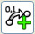
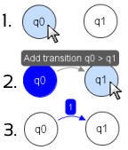
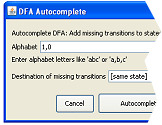

Add Transition-Tool

To add transitions between two states, click first on the starting state.
Then move the mouse to the end state and click again. You always see a preview
of the resulting transition. After second click a window will appear and you
can define the transition letters.

You also have the possibility to complete the transitions automatically,
e.g. you like to return to a certain state or remain in the
current state when reading the rest of the alphabet. Click on DFA -
Autocomplete transitions...
